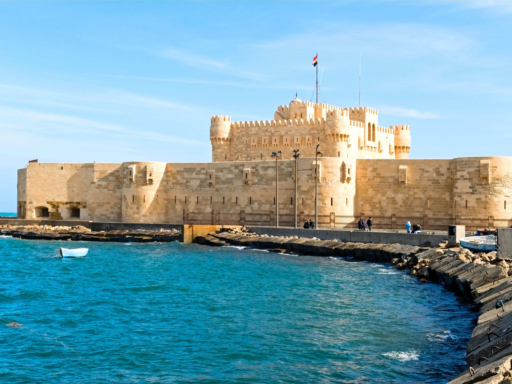
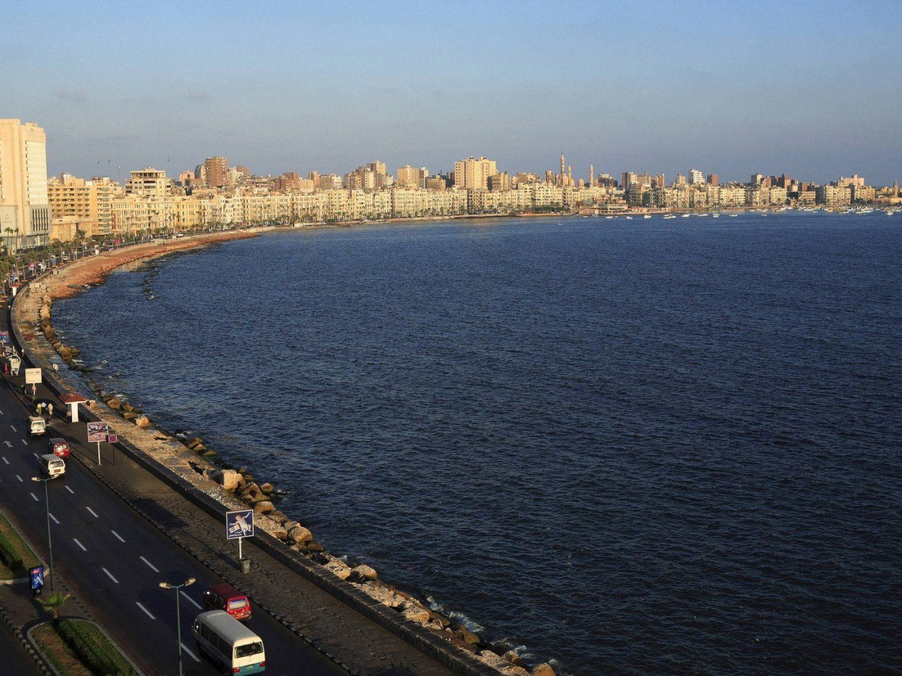
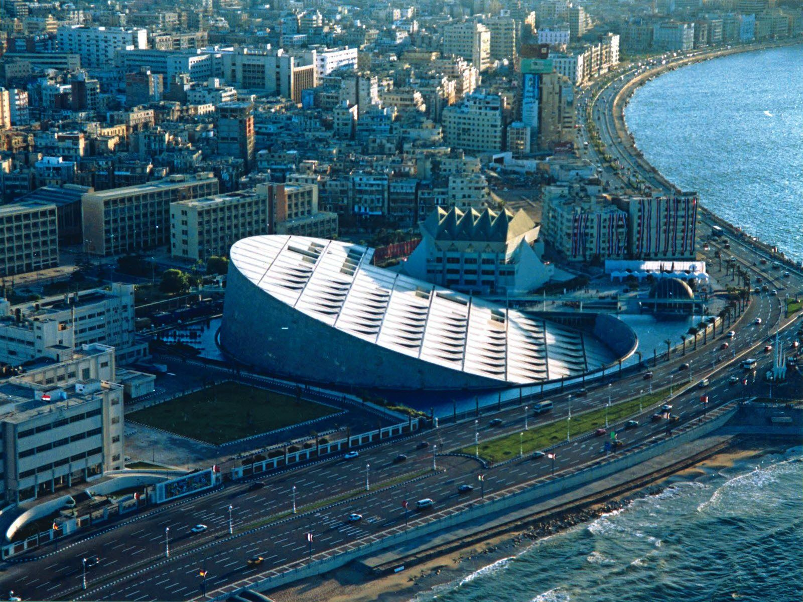

Alexandria
is the second-largest city in Egypt and a major economic center. With a population of 5,200,000, Alexandria is the largest city on the Mediterranean, the sixth-largest city in the Arab world and the ninth-largest in Africa. The city extends about 40 km (25 mi) at the northern coast of Egypt along the Mediterranean Sea. Alexandria is a popular tourist destination, and also an important industrial center because of its natural gas and oil pipelines from Suez. Alexandria was founded in c. 331 BC by Alexander the Great, king of Macedon and leader of the Greek League of Corinth, during his conquest of the Achaemenid Empire. An Egyptian village named Rhacotis existed at the location and grew into the Egyptian quarter of Alexandria. Alexandria grew rapidly to become an important center of Hellenistic civilization and remained the capital of Ptolemaic Egypt and Roman and Byzantine Egypt for almost 1,000 years, until the Muslim conquest of Egypt in AD 641, when a new capital was founded at Fustat (later absorbed into Cairo). Hellenistic Alexandria was best known for the Lighthouse of Alexandria (Pharos), one of the Seven Wonders of the Ancient World; its Great Library (the largest in the ancient world); and the Necropolis, one of the Seven Wonders of the Middle Ages. Alexandria was the intellectual and cultural center of the ancient Mediterranean world for much of the Hellenistic age and late antiquity. It was at one time the largest city in the ancient world before being eventually overtaken by Rome. The city was a major center of early Christianity and was the center of the Patriarchate of Alexandria, which was one of the major centers of Christianity in the Eastern Roman Empire. In the modern world, the Coptic Orthodox Church and the Greek Orthodox Church of Alexandria both lay claim to this ancient heritage. Following the Arab conquest of Egypt in AD 641, the city was plundered and lost its significance before re-emerging in the modern era.From the late 18th century, Alexandria became a major center of the international shipping industry and one of the most important trading centers in the world, both because it profited from the easy overland connection between the Mediterranean Sea and the Red Sea, and the lucrative trade in Egyptian cotton.
  Come Egypt To See Mora
.jpg)